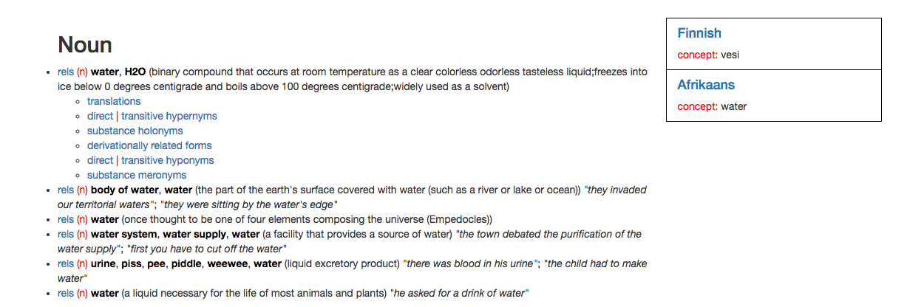

User Documentation¶
Interface Language¶

You can change the interface language on the top side of the browser, in the menu like the one in this image. The first four languages are clickable, upon click the page will reload and the language will be displayed. On the ‘+’ icon you will find a dropdown menu containing more languages that are browsable.
References & Download¶
References to the resources used are on the references page which is accessed through the icon on the left.
The link to the download is on the icon on the right side.
Search¶
Search bar¶

By clicking enter or the magnifying glass icon the search will be triggered, given that there is a word being searched for. The icon on the right with the globe reveals the translation menu.

You can select however many languages you would like to see the translations of words on.
Related concepts¶

Any synset in the results is expandable, meaning that the relations to the synset can be displayed. By clicking on ‘rels’, the menu to target those relations is expanded, like so.

Selecting any relations will further expand search results. If you select translations, the results of the translations into the languages you have selected earlier in the translations menu will show up on the right side.
